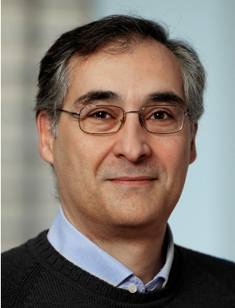

CIDR 2023 Keynote Speakers
Monday Keynote: 9:15 am-10:15 am

Gustavo Alonso (ETHZ)
Data Processing in the Hardware Era
Abstract:
Over the decades, the database research community has gone
through different phases: the exciting years implementing and
consolidating the relational model, the widening perspective on data
management offered by search engines and the web, and now the challenges
posed by the cloud, which is not only a shift in technology but also a
change in the business model of the IT world. In this talk I will
hypothesize that we are in a new period where most of the established
assumptions, rules of thumb, and accumulated wisdom about data
processing no longer hold and need to be revisited. Data processing in
general, and databases in particular, are at the heart of all relevant
applications and use cases these days. However, they are also
disappearing into the infrastructure, with several layers of additional
processing on top of them becoming more relevant and attracting more
attention from industry and academia (web servers, diverse analytical
applications, ML/AI tools, micro-services, etc.). As part of this
process, the expectations and requirements on data processing are also
changing, becoming far more demanding and often inseparable from those
of the supporting hardware and software stack. In particular, the high
degrees of specialization being driven by the cloud and the resulting
fundamental changes in hardware cannot be ignored. In the talk I will
present some such architectural developments, explain why they represent
fundamental changes, and discuss how they are likely to affect data
processing in the years to come.
Bio:
Gustavo Alonso is a professor in the Department of Computer
Science of ETH Zurich where he is a member of the Systems Group. He
graduated in Telecommunications Engineering from the Technical
University of Madrid, Spain and did his MSc and PhD at the University of
California at Santa Barbara. After graduation, he was a research
scientists at the IBM Almaden Research Center in San Jose, California
before joining ETH. His research interests include data management,
distributed systems, cloud computing architecture, and hardware
acceleration through reconfigurable computing. Gustavo has served as PC
chair for conferences in several areas including VLDB, ICDE, EDBT,
EuroSys, Middleware, and ICDCS and regularly serves in the Program
Committee of CIDR, VLDB, SIGMOD, FPGA, ATC, EuroSys, OSDI, and MLSys.
He was a member of the VLDB Endowment and the EDBT Executive Board and
the Chair of EuroSys, the European Chapter of ACM SIGOPS. Gustavo has
received 4 Test-of-Time Awards for his research in databases, software
runtimes, middleware, and mobile computing. He is an ACM Fellow, an IEEE
Fellow, and a Distinguished Alumnus of the Department of Computer
Science of UC Santa Barbara.
Wednesday Keynote: 9:00 am-10:00 am
Hannes Mühleisen (CWI)
The Good, the Bad, and the Not-so-Ugly Duckling
Abstract:
TBA
Bio:
TBA